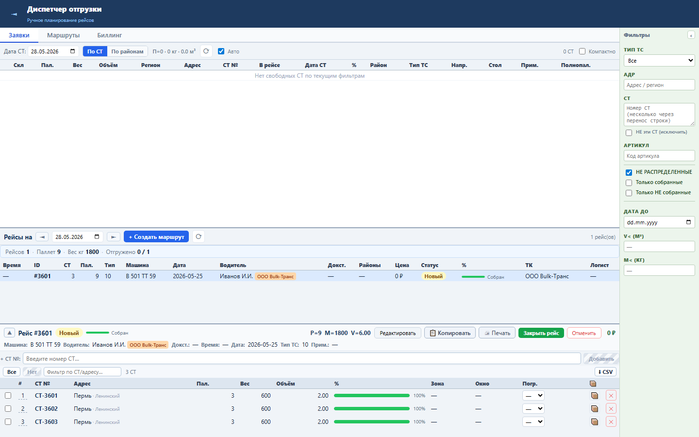
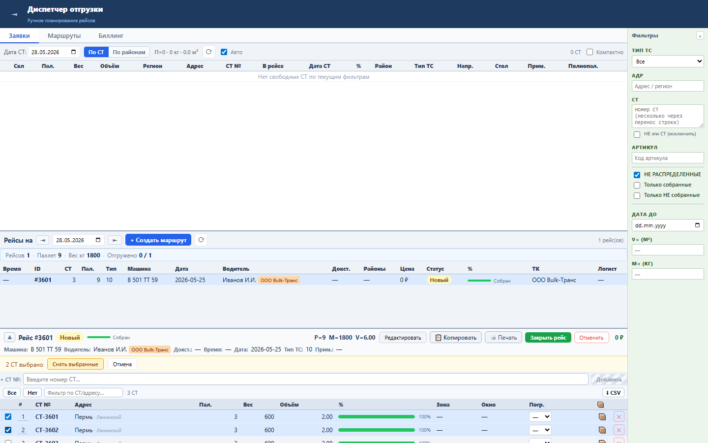
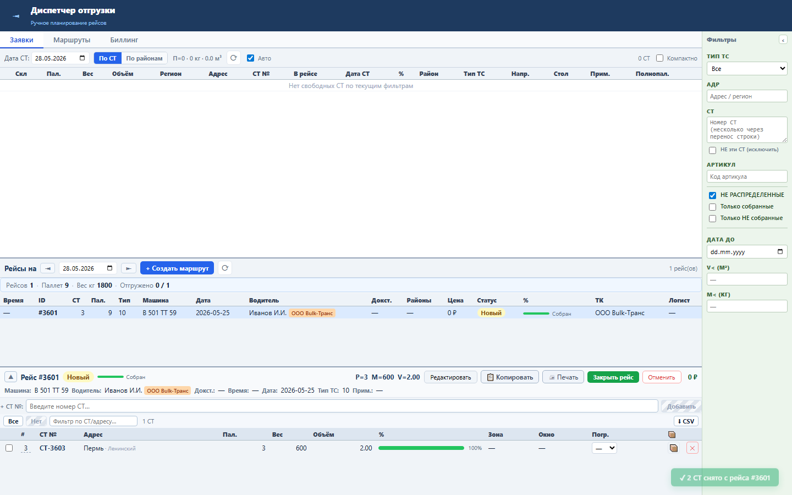

Блок нужен, чтобы диспетчер снимал несколько СТ из рейса одной операцией, без повторения действия по каждой строке.
Frontend хранит выбранные СТ в selectedTripStNums. Для снятия отправляется несколько DELETE /tasks/{id}/sts/{st}. Backend запрещает операцию для отгруженных и billed рейсов.
Выбранные СТ снимаются, выделение очищается, состав рейса и список доступных СТ обновляются.



Проверка: functional, UI smoke и безопасный load gate пройдены.